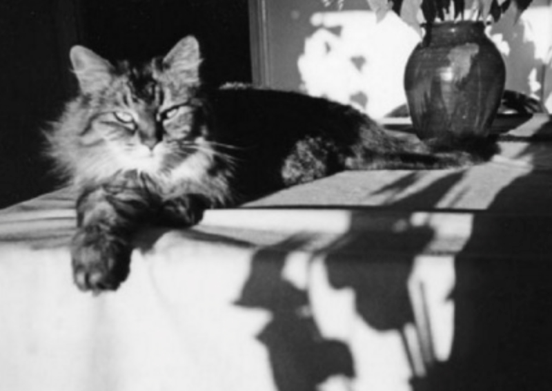
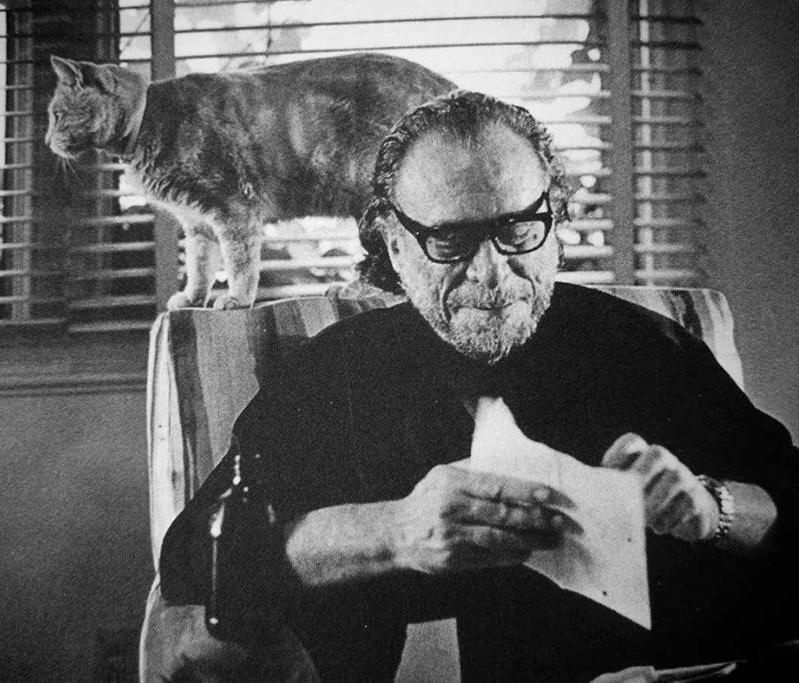
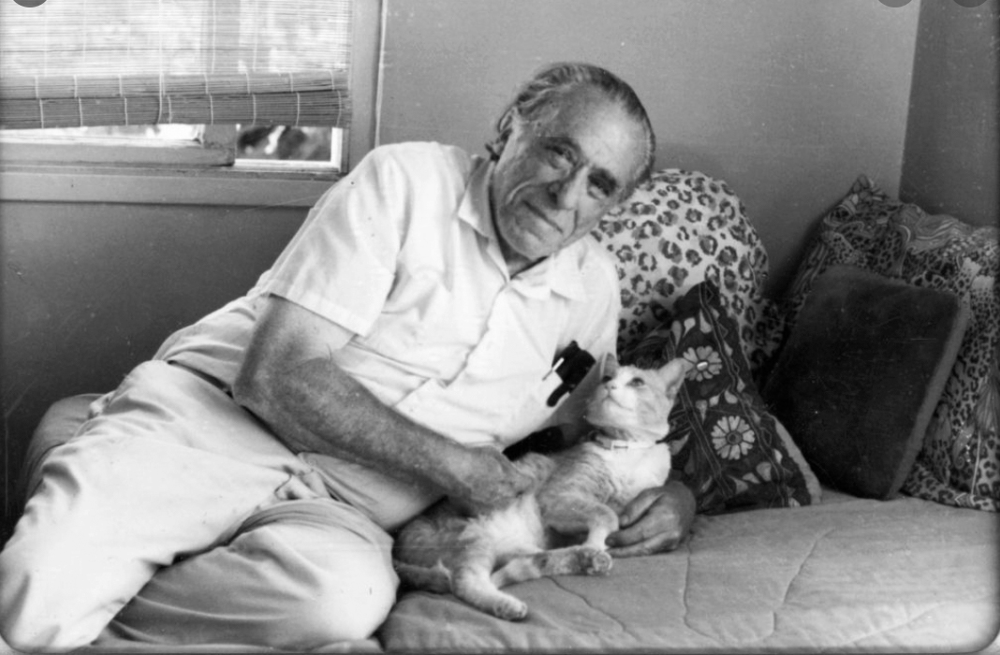
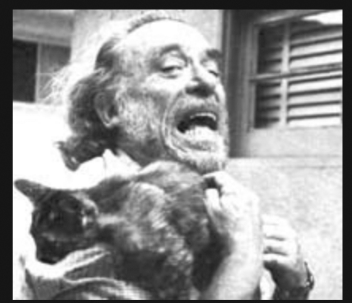
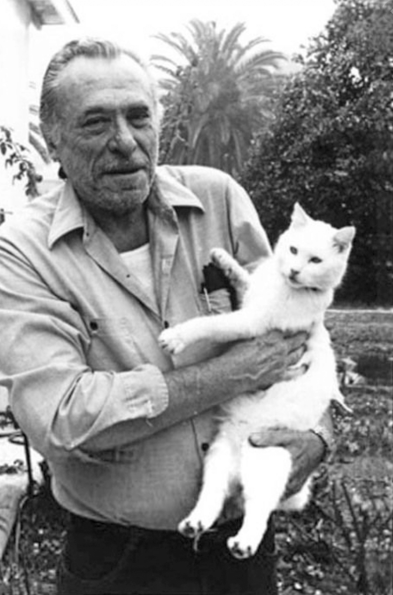
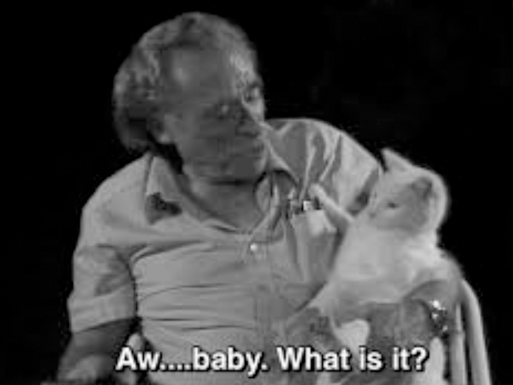
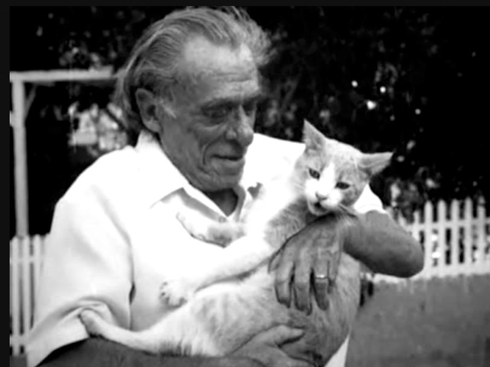

My Cats by Charles Bukowski
I know. I know. they are limited, have different needs and concerns
I know. I know. they are limited, have different needs and concerns
but I watch and learn from them. I like the little they know, which is so much.
they complain but never worry, they walk with a surprising dignity. they sleep with a direct simplicity that humans just can't understand.
their eyes are more beautiful than our eyes. and they can sleep 20 hours a day without hesitation or remorse.
when I am feeling low all I have to do is watch my cats and my courage returns.
I study these creatures.
they are my teachers.
